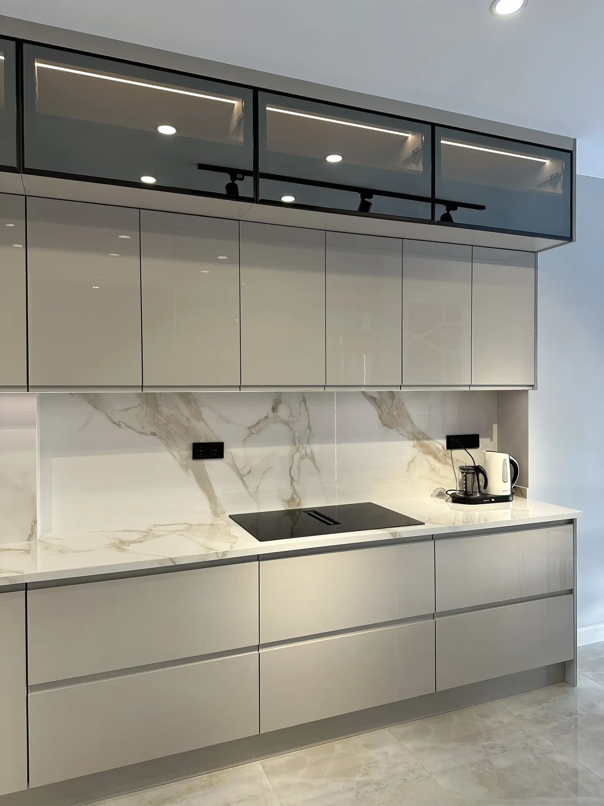
Akrilik & Ada Mutfak
Lüks Akrilik & Füme Cam Kapak Ada Mutfak
Senosan parlak beyaz akrilik modüller, füme reflekte cam üst vitrin ve porselen ada tezgahı.
Membran, lake, matplus, akrilik ve high gloss teknolojisiyle doğrudan Dudullu atölyemizden aracısız imalat. 18 mm Kastamonu/Egger E1 MDF gövde ve Avusturya Blum mekanizmalar standart.
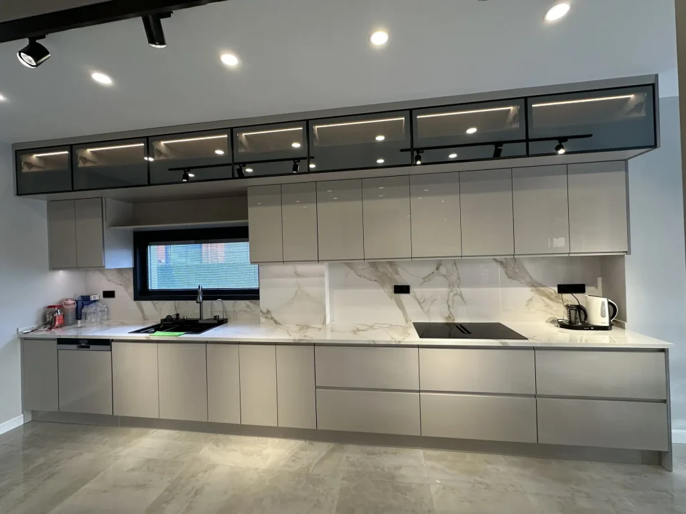
Lüks Alüminyum Cam Kapak & Akrilik Ada Mutfak
2026 Özel Koleksiyonİstanbul genelinde teslim ettiğimiz gerçek müşteri mutfakları ve Dudullu atölyemizin usta işçiliğinden güncel 2026 modellerimiz.

Senosan parlak beyaz akrilik modüller, füme reflekte cam üst vitrin ve porselen ada tezgahı.
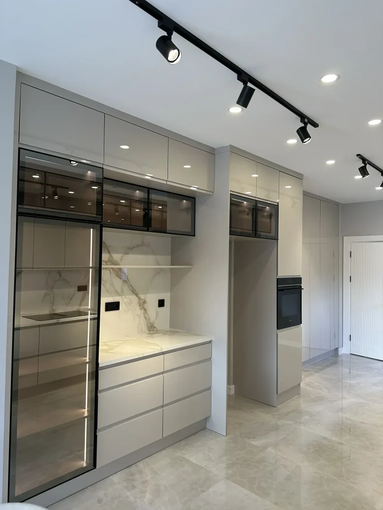
Entegre gizli prizli kahve barı, Senosan çizilmez akrilik paneller ve porselen ada tezgahı.
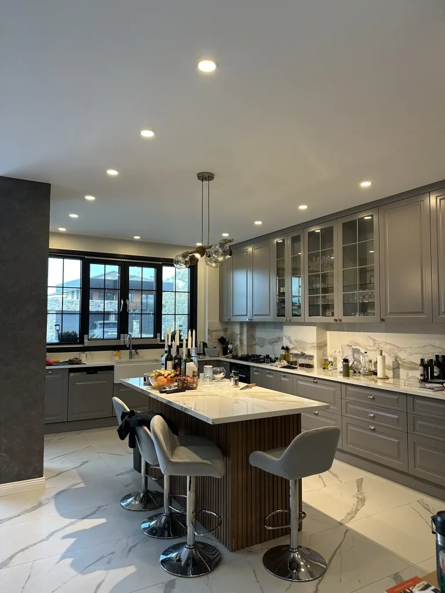
Özel fırın boyalı çıtalı lake kapaklar, entegre kahvaltı barı ve damarlı beyaz porselen tezgah.
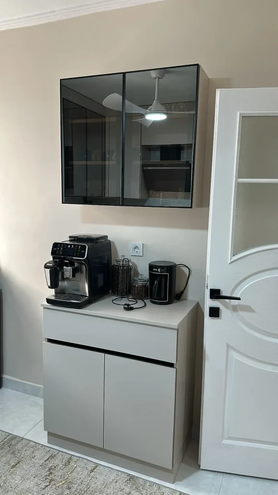
Füme reflekte cam kapaklı içten aydınlatmalı vitrin kuleleri ve porselen tezgahlı hazırlık barı.
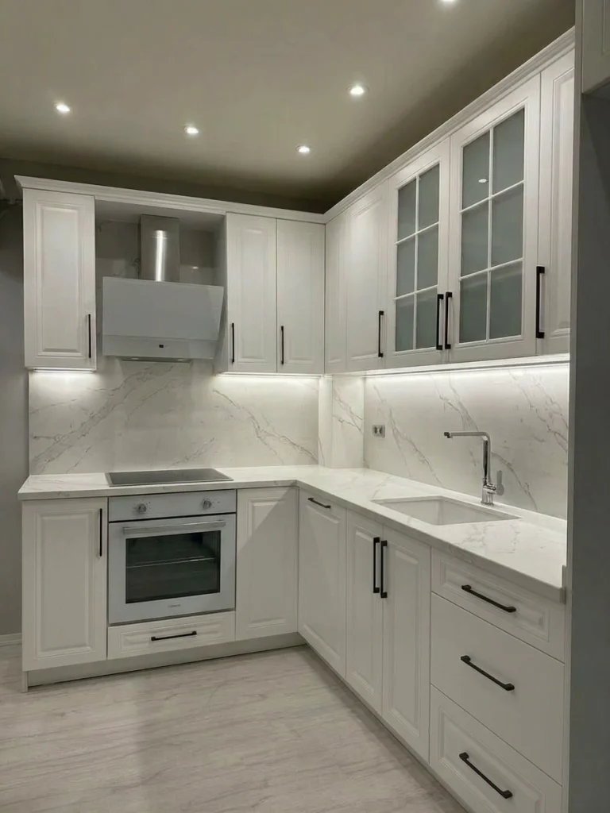
Yekpare vakum PVC presleme çıta desenleri, seramik eviye ve buhara %100 dayanıklı kapaklar.
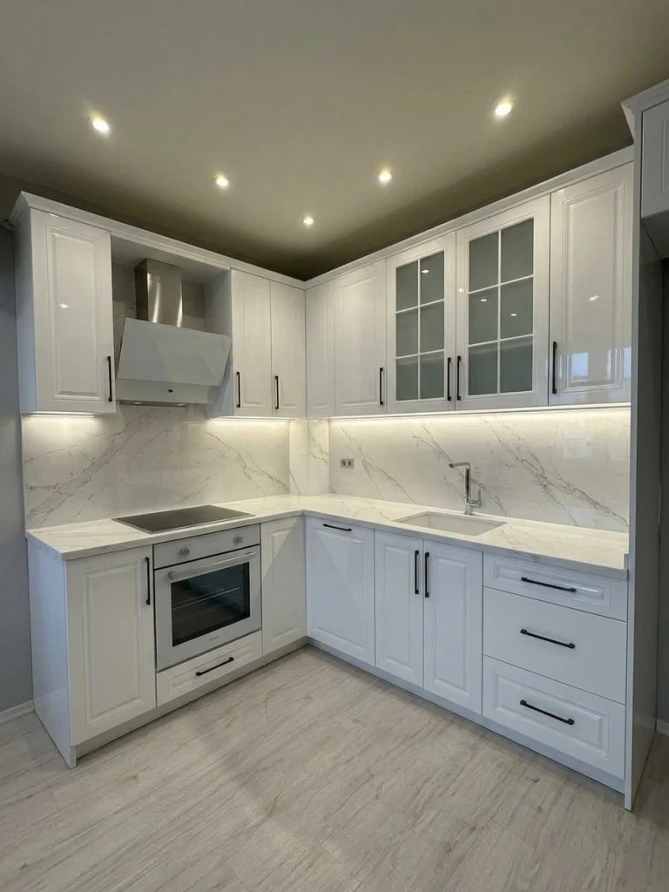
Sıcak ahşap açık raf detayları, geniş ada hazırlık masası ve rustik kulp koleksiyonu.
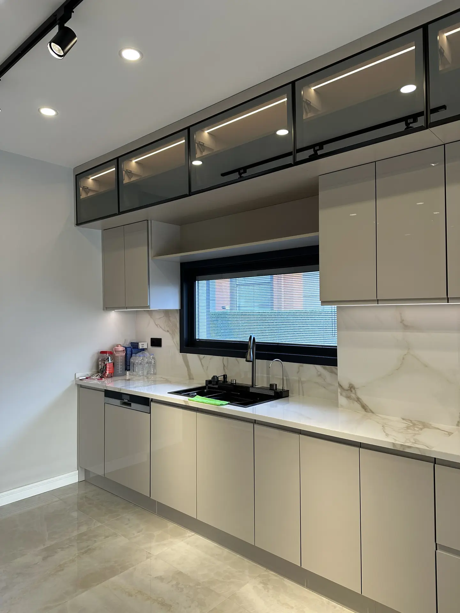
Avusturya Senosan 6H çizilmez akrilik paneller, 12 mm porselen tezgah ve kulpsuz gola profil.
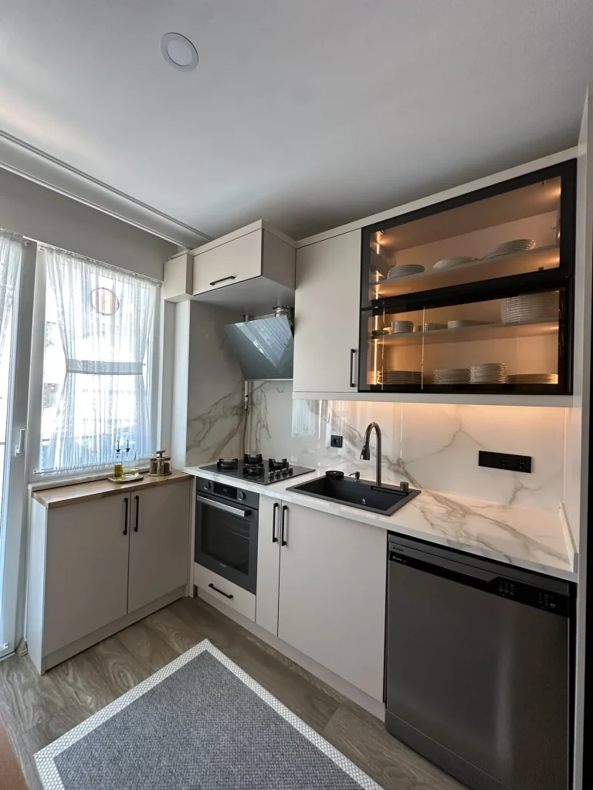
UV yüksek parlak High Gloss kapaklar, füme camlı alüminyum profil ve sensörlü LED aydınlatma.
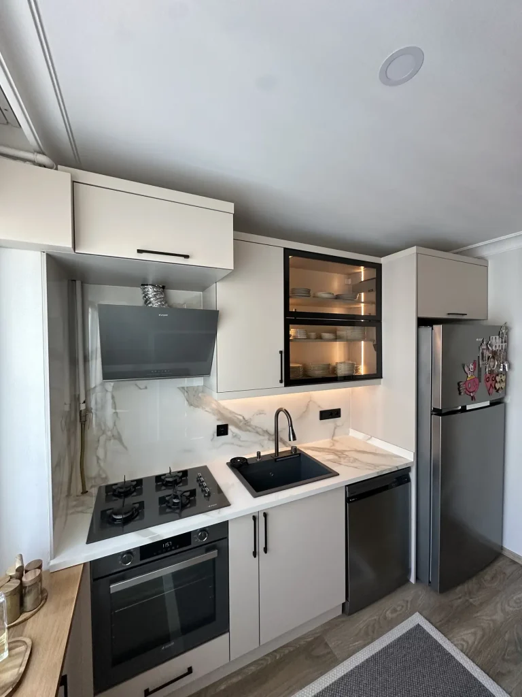
Işıltılı UV lake yüzey, granit tezgah ve geniş tencere çekmeceleri ile modern ferah mutfak.
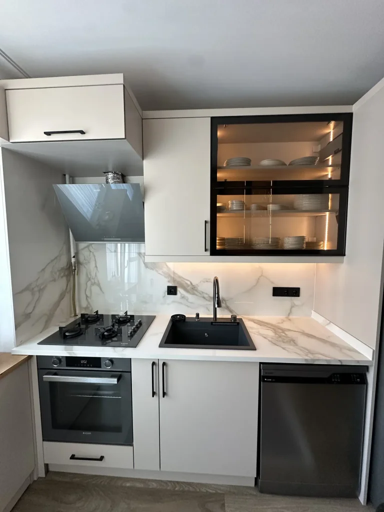
Tezgahtan duvara kesintisiz uzanan derzsiz monolitik porselen ve parlak beyaz dolaplar.
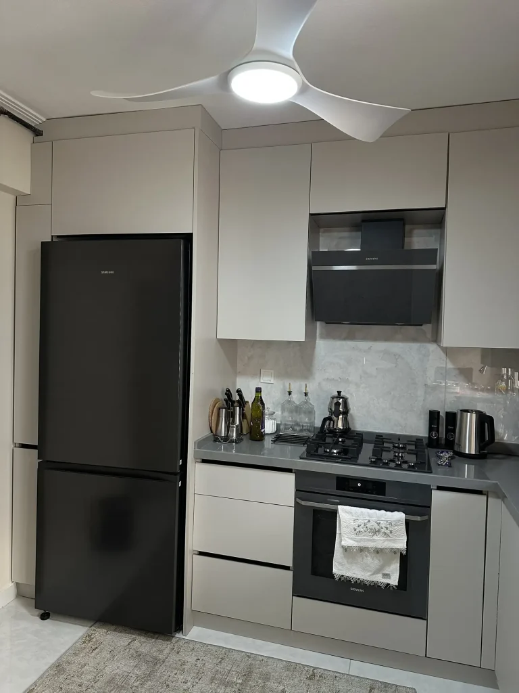
Çizilmeye ve lekeye dayanıklı Çimstone kuvars yüzey, parlak kapak ve gizli kulp imalatı.
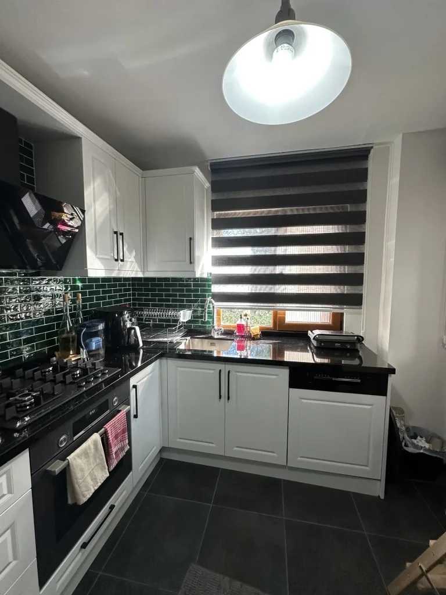
Evinizin ölçülerine milimetrik CNC kesim, tavan gizli aydınlatması ve akıllı kiler sistemleri.
Membran kapaklar, 18 mm ham MDF levhaların CNC tezgahlarda istenilen profil ve oyma desenleriyle işlenmesinin ardından, yüksek ısı ve vakum pres altında PVC membran folyo ile kaplanmasıyla üretilir.
Kapağın kenarlarında ek yeri (kenar bandı) bulunmaz. Folyonun yekpare dönmesi sayesinde neme, su buharına ve neme karşı mükemmel bir bariyer oluşturur. Country, klasik çıtalı veya düz modern tasarımlar için vazgeçilmezdir.
Matplus teknolojisi, modern mimaride son yılların parlayan yıldızıdır. Yüzeyindeki nano-kaplama sayesinde el izi, yağ lekesi veya parmak izi bırakmaz. Dokunulduğunda ipeksi, sıcak ve kadifemsi bir his uyandırır.
Özellikle gün ışığı alan mutfaklarda ışığı kırmadan homojen emer ve mekana son derece dingil, sofistike ve lüks bir mimari derinlik kazandırır.

Akrilik mutfak dolapları, 1. sınıf Senosan çizilmez akrilik levhaların MDF panellere PUR (Poliüretan) tutkalla preslenmesiyle imal edilir. Ayna parlaklığında kristal derinlik veya asil ipeksi mat seçenekleri sunar.
Lazer kenar bandı (ZeroJoint) teknolojimiz sayesinde kapağın kenarlarında kir toplayan ek çizgisi oluşmaz. UV koruması sayesinde güneş ışığında kesinlikle sararma yapmaz, yıllarca ilk günkü parlaklığını korur.

Lake kapaklar, lüks mimari tasarımların zirvesidir. CNC işlemesi tamamlanan yüksek yoğunluklu ham MDF panellerin üzerine astar, dolgu ve en az 3 kat poliüretan/akrilik lake boya püskürtülerek özel fırınlarda kurutulmasıyla elde edilir.
Kapağın 6 yüzeyi de boya katmanıyla mühürlendiği için kesinlikle kenar bandı bulunmaz. Su ve neme karşı tam monoblok koruma sağlar. İlerleyen yıllarda sadece kapak rengini değiştirerek mutfağınızı sıfırdan yenileme özgürlüğü sunar.
High Gloss mutfak kapakları, 18 mm MDF levhaların üzerine UV lak teknolojisiyle uygulanan yüksek parlaklıktaki kaplamadır.
Bütçesini yormadan modern, parlak ve pırıl pırıl bir mutfak yaptırmak isteyen ev sahipleri ve müteahhit projeleri için en ekonomik ve pratik tercihtir.
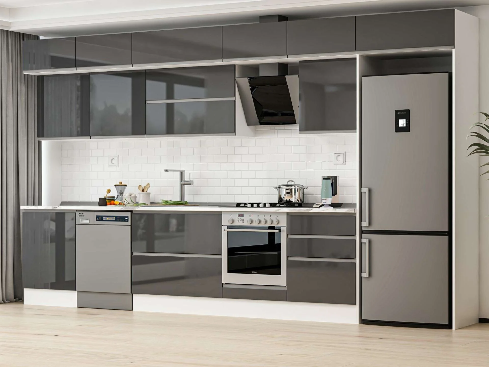
Milimetrik lazer ölçüleri, CNC hassas kesim makineleri ve marangoz ustalarımızla mutfaklarınızı sıfır hata ile üretiyoruz.
Bütçenize, kullanım alışkanlıklarınıza ve zevkinize en uygun mutfak dolabını seçin.
Country ve oymalı desenler için tek parça vakum kaplama.
Parmak izi bırakmayan kadife dokulu minimalist kapak.
Senosan ayna parlaklığında kristal levha.
Çok katmanlı poliüretan fırın boyası ve sıfır ek yeri.
İstanbul Anadolu ve Avrupa yakasında ücretsiz lazerli keşif ve 3D mimari çizim randevunuzu hemen oluşturun.